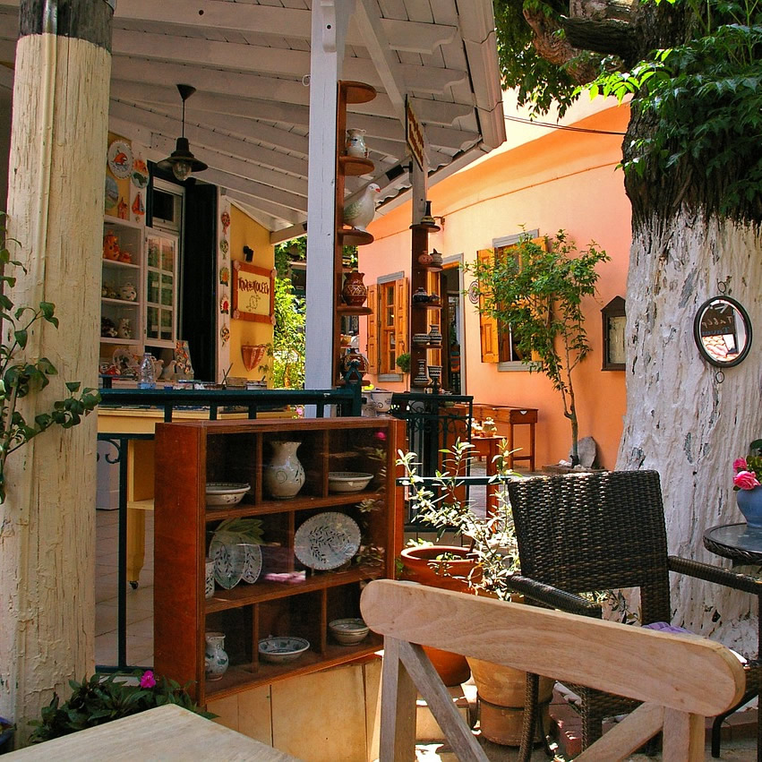

Vicky Tan Coffee Shop uses only Fair Trade Coffee from Equador. The exact location is called Puyo,
in the rainforest of the Amazonas river.
We love to support our people and their hard work because
thanks to them we all can have an exquisite coffee.
This Fair Trade campaign has expanded around
the globe and now every country that produces coffee beans has Fair trade certified farmers.
This includes: Equador, Brazil, Peru, Honduras, Vietnam, Colombia and Indonesia.
As our business gets bigger over the years we will be very happy to bring to you more varieties of
coffee beans from other countries, because YOU DESERVE IT!!.

Here at Vicky Tan we pride ourselves in our Ecuadorian coffee with its sweetness, body, fruitiness, and floral notes.
The cool winds and rich volcanic soil produce coffee that is delicious, well balanced and rounded. So why not pop in
and try our amazing coffee and treats from such a wonderfully biodiverse country. We also offer a wide range of pastries
and savory foods! (Whether you're gluten free, dairy free, or just need a little something different, we have an option for all!)
We are a small but cozy cafe that overlooks the beautiful lake. Come visit us to enjoy the calming views while enjoying a nice cup of coffee.
You can find us at Calle San Marco N23-91, right across the Rio Grande. We hope to see you!
A BIG WELCOME FROM DIANNA VICTORIA TRIFAN AND BREAVIAN TAN.